2. Chapter 1 - Setting Up the Work Environment
2.1. Install the tools
- Node.js: Download and install version 22 (or later) from nodejs.org. Verify the installation in a terminal:
- Visual Studio Code (VSCode): available for free download at code.visualstudio.com. Install the “TypeScript and JavaScript Language Features” extension (usually already included).
- [NestJS], CLI, [Angular], and CLI—two command-line tools installed once and for all. In a terminal for VSCode:
- [MySQL] 8: Install, for example, using XAMPP, Laragon (on Windows), or directly using [MySQL] Community Server. A graphical administration tool (phpMyAdmin, [MySQL] Workbench, DBeaver, HeidiSQL…) makes the rest of the process easier. From there on, the Laragon tool is used.
- Postman: available for free download at postman.com.
If you have downloaded the code, it is located in two folders:
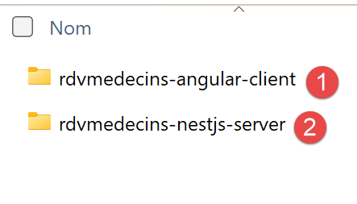
- in [1], the client [Angular];
- in [2], the server [NestJS];
Open the [2] folder with Visual Studio [File / Open Folder]:

2.2. Create the database
To create the [MySQL] database used by the [NestJS] server, we will use the Laragon tool. As of September 2026, Laragon is available at URL [Download Laragon – Fast & Modern Dev Environment ]. Laragon includes tools that allow you to install a PHP server and the SGBD and [MySQL] servers:

- in [1], an Apache web server;
- into [2], the SGBD and [MySQL];
- to [3], a messaging tool that we will not be using;
- [4] starts all services (Apache, [MySQL], MailPit);
- [5] displays the web page for URL and [http://localhost]. By default, this URL refers to the <laragon-install>\www folder, where <laragon-install> is the Laragon installation folder;
- in [6], launches the HeidiSQL tool, which allows you to manage MySQL databases. We will use this tool to create the database used by the tax calculation server;
- In [7], open a terminal; all the binaries needed for Laragon are located in PATH;
- In [8], open Windows Explorer to the folder associated with URL and [http://localhost];
The Laragon installation folder contains the following items:
 |
- In [1], the [bin] folder contains numerous applications:
 |
- In [1], the Apache web server;
- in [2], a command-line terminal;
- in [3], a [git] client that allows you to manage different versions of a project;
- in [4], a database manager;
- [5], an email manager;
- [6], SGBD, and [MySQL];
- [7], another web server;
- in [8], [node.js] to run JavaScript scripts;
- [9], a text editor;
- in [10], the PHP interpreter;
- [11], the [Python] interpreter;
- [12], a cache server;
Laragon comes with a comprehensive development environment. In this course, we will only use SGBD, [MySQL], [6], and [heidisql] for graphical management;
To create the [MySQL] database required by the [NestJS] server, proceed as follows:
 |
- In [1], all services must be started;
- In [2], the [Database] option allows you to manage the database;
The option [Database] launches a utility called HeidiSQL:
 |
- In [1], you can select various SGBD options. The default value provided is SGBD MySQL. This is acceptable;
- in [2], you log in to HeidiSQL;
 |  |
- In [1-2], run the SQL file, then select the [dbrdvmedecins.sql] file, which you’ll find in the [nestjs-etude-de-cas] folder:
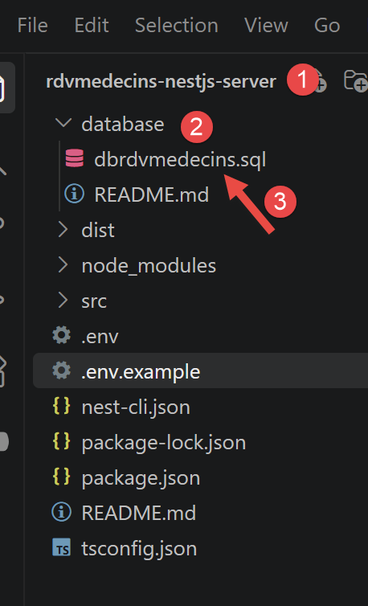
Running the [3] file will create the [dbrdvmedecins] database used by the [NestJS] server. To view it, run F5 within HeidiSQL to refresh the display:
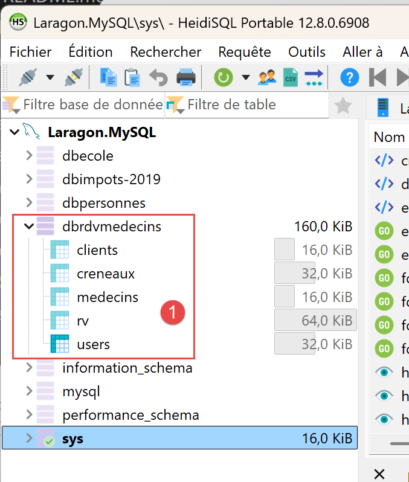
The database [dbrdvmedecins] has been created. You can view its contents:

- in [1-3], the table [clients];
- [id] is the primary key of the table;
- [version] is the row's version number. This number increments each time the row is modified;
- [titre, nom, prenom] identifies the person;

- in [1-3], the table [medecins];
- [id] is the primary key of the table;
- [version] is the version number of the row;
- [titre, nom, prenom] identifies the person;
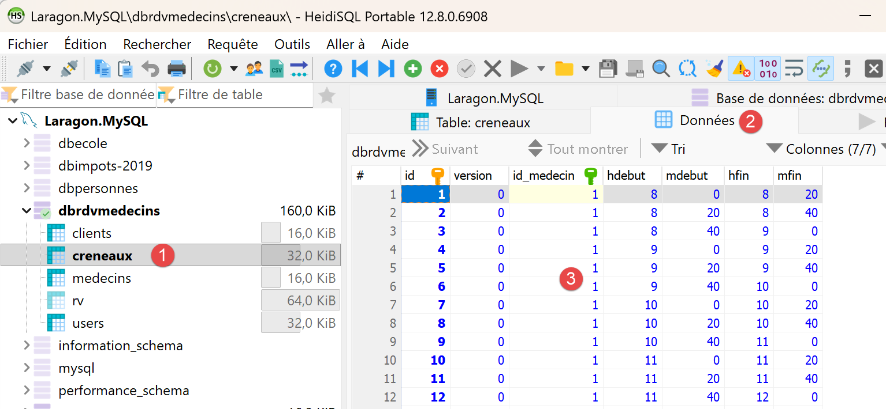
- In [1-3], the table of doctors’ appointment time slots:
- [id]: primary key;
- [version]: row version number;
- [id-medecin]: foreign key referencing the doctor’s primary key;
- [hdebut, mdebut]: hour and minutes of the appointment start time. Thus, [8,20] means 8:20 a.m.
- [hfin, mfin]: hour and minutes of the end of the consultation.

- In [1-3], the [rv] table of scheduled appointments;
- [id]: primary key;
- [version]: version number;
- [jour]: appointment date;
- [id_creneau]: foreign key referencing the primary key of the appointment time slot. Since a time slot is linked to a doctor, we know which doctor is handling this appointment;
- [id_client]: foreign key to the number (primary key) of the patient attending the appointment;
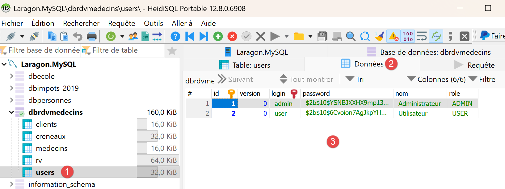
- in [1-3], the table [users], which lists the users authorized to use the application [NestJS];
- [id, version]: primary key, version number;
- [login, password]: user credentials;
- [nom]: user name;
- [role]: the user’s role. [ADMIN] has full access rights. [USER] has read-only access. This user can view a doctor’s schedule but cannot schedule or cancel an appointment;
2.3. Start the [NestJS] server for the first time
In the [rdvmedecins-nestjs-server] folder, type the following commands in a terminal:
The [.env] file sets environment variables:
Adapt the newly created .env file to your [MySQL] installation (username, password, port). Since authentication was added (see Chapter 3), this file also contains a key JWT_SECRET: the example value is suitable for following this document, but must be replaced with a random string unique to you before any actual use.
Then start the server:
The console displays, in order: the startup of the [NestJS] module, the list of routes exposed by the controller, and then confirmation of startup:
This console output confirms that the server is indeed listening on port 8080—exactly the same port as the Spring Boot server in the original document, which was deliberately chosen for this reason.
2.4. Testing the Server with a Browser
Since authentication was added (Chapter 3), all routes in RdvMedecinsController require a valid JWT token: therefore, a browser alone can no longer be used to test them directly. For example:
now returns a 401 Unauthorized error without a token:

This is the expected behavior: this response confirms that the server is properly protecting its routes. Postman (next section) is required to obtain a token and then use it.
2.5. Testing the [NestJS] server with Postman
The Postman tool is available at URL [https://www.postman.com/downloads/]. You may need to create an account.
Start all Laragon services, then open the Postman desktop application:
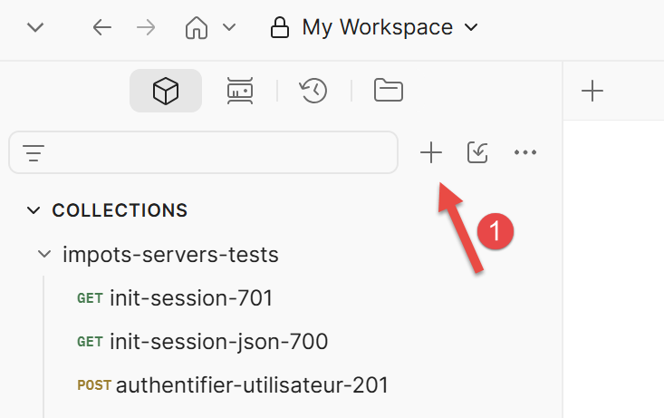 | 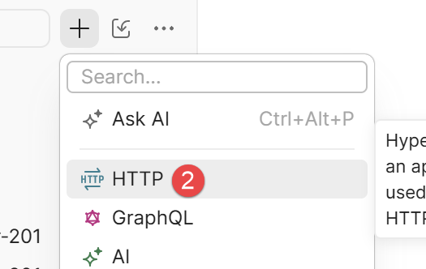 |
- In [1-2], create a request HTTP to query the doctors’ appointment management server;
2.5.1. Log in and obtain a token
- Create a new Postman request with the method POST, URLhttp://localhost:8080/login;
- In the [Body] tab, select “raw,” then the JSON format, and enter: {"login": "admin", "password": "admin"} (or “user/user” to test the USER role);
- Submit the request.

- in [1-2], the request POST to the server [NestJS] running on port 8080;
- to [3-5], the body of the request. This transmits to the server the string JSON containing the credentials of the user attempting to log in, in this case admin/admin;
- in [6], the server’s response;
- in [7], the authentication token that subsequent requests must send to the server to indicate “I have already authenticated”;
Copy the value from accessToken: this is the token you must now include in every subsequent request. In the example above, the token to copy is “eyJ...zoM” (without the quotes).
2.5.2. Calling a protected route with the token
For GET /getAllMedecins (or any other route starting with RdvMedecinsController), in Postman, on the Authorization tab, select the Bearer Token type and paste the token copied above (Postman will then automatically add the Authorization: Bearer <token> header).
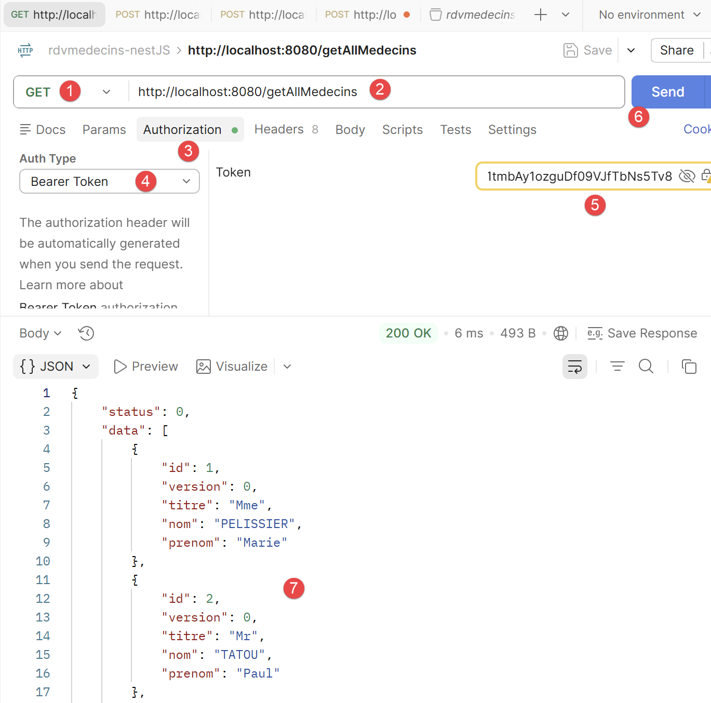
- in [1-2], the request sent to the server. It requests the list of doctors in the database;
- In [3-5], the request must include the authentication token. In [4], select [Bearer Token], and in [5], paste the authentication token you copied earlier;
- in [7], the server’s response;
2.5.3. Test the routes POST (/ajouterRv, /supprimerRv)
Follow the same procedure as above (method POST, body JSON, Bearer Token), exactly as the original document used the Chrome extension “Advanced Rest [Client]” for the same routes.
Note: You can find the following Postman requests in the [rdvmedecins-nestJS.postman_collection.json] collection:
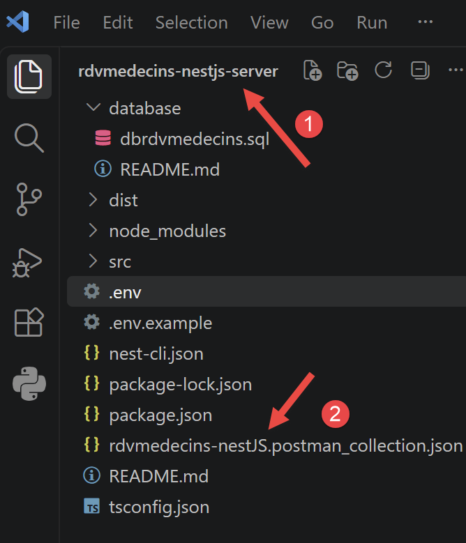
In Postman, press Ctrl-0 to load the collection:
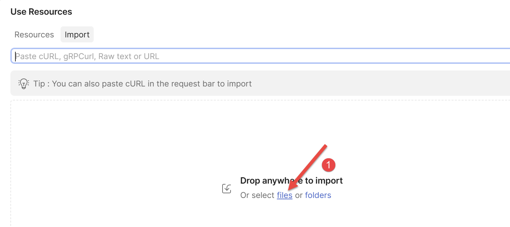
- Click on [1] to load the collection and select the collection file. Once the collection is loaded, it displays its requests:
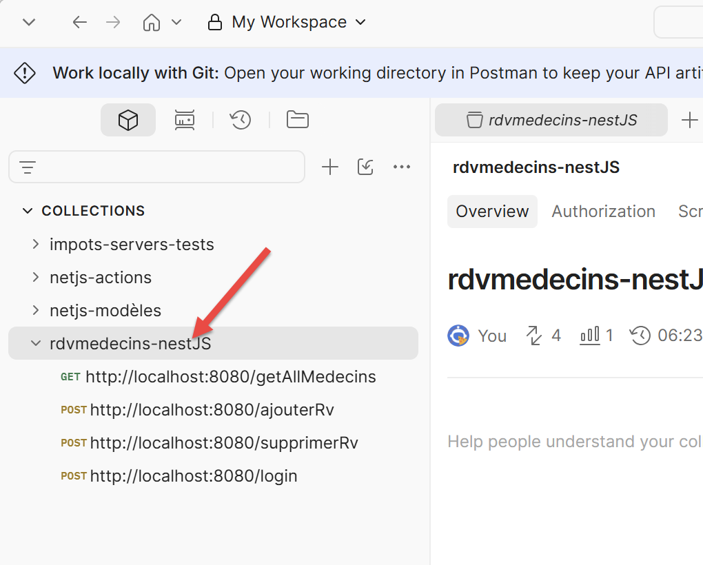
To test /ajouterRv with the token from an account ADMIN:
- Postman request, method POST, URLhttp://localhost:8080/ajouterRv;
- Authorization tab: Bearer Token, admin token;
- [Body] tab, raw, JSON: {"day": "2026-09-13", "idClient": 1, "idCreneau": 5};
- Send the request.
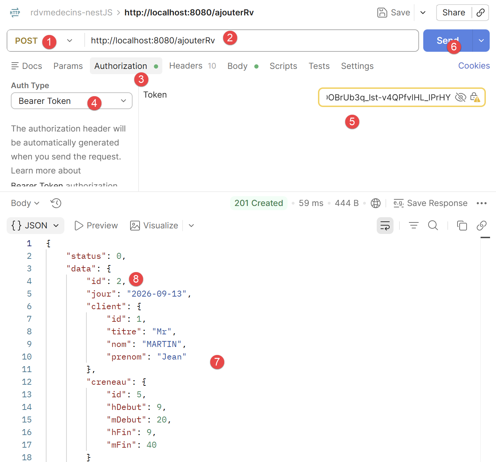
You can verify with HeidiSQL that an appointment has been added to the database:

To test /supprimerRv, follow the same procedure with the body {"idRv": 2} (the ID of the appointment to be canceled (8) above).
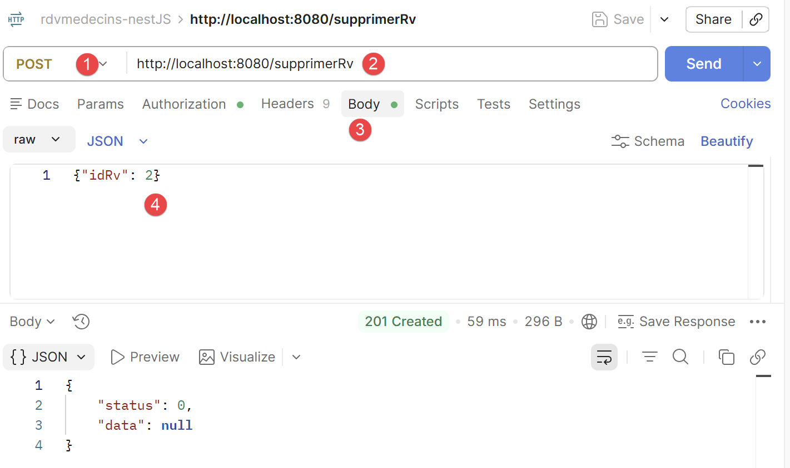
- in [4], where the number above is the appointment to be deleted;

- to [5-7], the authentication token;
- to [9], the server’s response. [status=0] indicates that the operation was successful. You can verify this with HeidiSQL:

- in [3], appointment #2 no longer exists;
Try this: repeat the same request /ajouterRv using the token for the USER account (user/user) instead of the admin token: the response becomes 403 Forbidden, with the message “The role [USER] does not allow this action (required role: ADMIN)”—a concrete demonstration of the role-based access control implemented in Chapter 3.
2.6. Launch the [Angular] client for the first time
In the rdvmedecins-angular-client folder (the [NestJS] server must be running first):
Then open http://localhost:4200 in a browser: the login screen appears first (see Chapter 5).
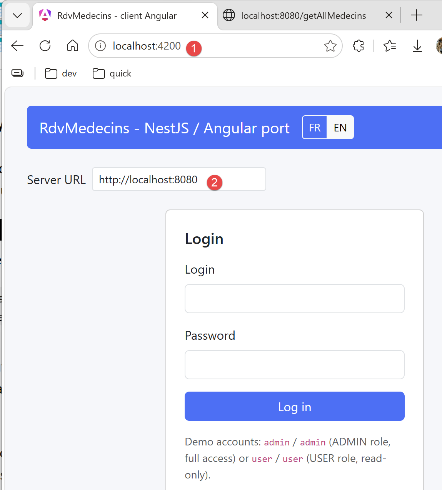
- in [1], the URL server that serves the [Angular] application;
- [2], the URL of the server [NestJS] that manages the database [rdvmedecins];
It is important to understand that there are two web servers here, one of which acts as a client to the other.
Two buttons labeled “FR” and “EN” in the upper-right corner allow you to switch the interface to English, even before logging in. Log in with one of the two demo accounts (admin/admin, full access, or user/user, read-only) to access the rest of the application. Chapter 5 provides a detailed guide to using this client, with screenshots for each step.